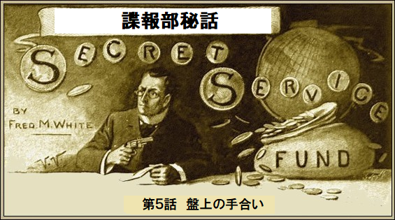
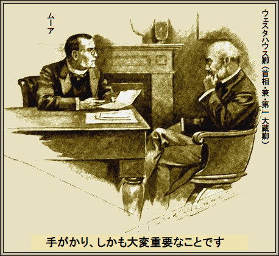
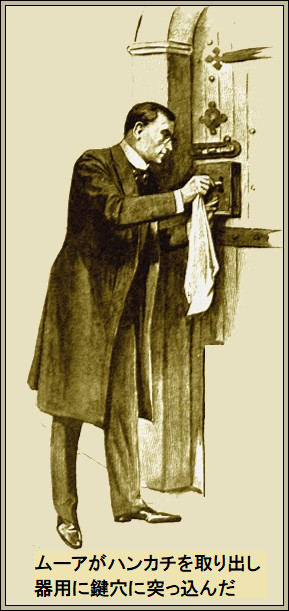
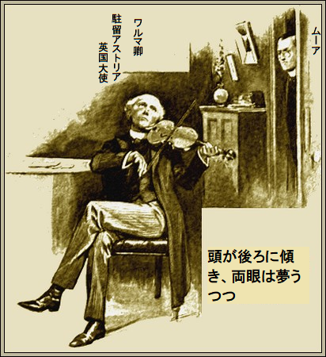
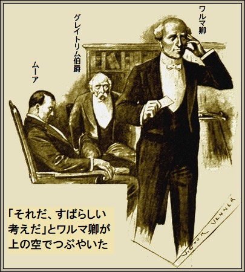
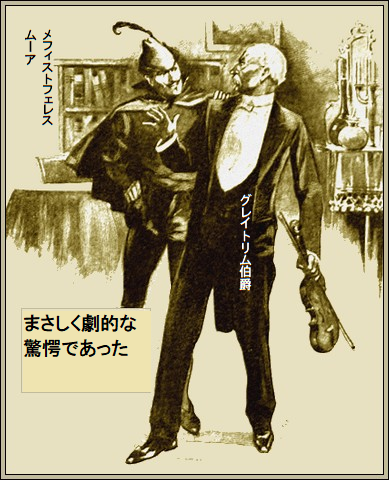

［＃改ページ］
ニュートン・ムーアが緊張して指でまさぐった一片の艶紙は自分のパスポート、
諜報部員のムーアが名刺を渡して待った。名刺はウェスタハウス卿のもの、鉛筆で「持参人面会許可」と書かれている。
仏頂面が高慢ちきに笑った。すぐにムーアは首相の個室に通された。
「閣下、お呼びでございますか」
とムーアがおずおず尋ねた。
ああ、と首相のウェスタハウス卿が額に手を当て、何か重要なことを思い出したかのように、
「ムーア君、呼んだよ。チャールズ・モーリィ卿が君の素晴らしい業績を教えてくれた。一つ引き受けてほしいのだが、大きな負担がかかるかもしれない。任務に全く危険がないとはいえない。必要なのは機転と工夫だ」
ムーアはお辞儀して、信頼に感謝した。
「アストリア大使のワルマ卿を少しは知ってるか」
と首相が尋ねた。
「聞いたことがあります。ワルマ卿の人となりは知能が高く、物知りの大家、バイオリンの名手と聞いています。何編か詩も読んだことがあります」
「高く評価しているのだな」
「部外者としてはそうですね、閣下。ワルマ卿は今まで素晴らしい方ですし、またちょっと気まぐれです。噂では家系に精神異常の気質があるとか」
首相の顔に重苦しい表情が浮かんだ。
「それを恐れている。ワルマ卿は任務をよく果たしてくれる。依然として高く評価している。しかし最近のことだが、ワルマ卿が裏切ったと結論せざるを得ない。つまり自国の為にならないという意味だ」
ムーアがちっと舌打ちした。首相である第一大蔵卿の前だろうが、ムーアは不敬をためらうことがなかった。
「閣下、時間の浪費のように思われます」
とムーアが言った。
幾分冷静にウェスタハウス卿が求めたのは、もっといい返事だった。
ムーアがことを重大に受けとめ始めた。明らかにワルマ卿には自国の秘密を漏らした疑いがかかっている。
このような驚くべき事案はこと大使に関し、前代未聞だろう。ウェスタハウス卿が事実を打ち明けなければ、話をしても意味が無い。
「君は向う見ずだよな」
と首相のウェスタハウス卿が嫌みに言った。
「閣下、そうかもしれませんが、バカじゃないですよ」
ウェスタハウス卿は下敷きに
「その通りだ、悪かった。要するにこういうことだ。ここしばらく我が国は欧州外交で大失態を演じ続けておる。だからこそおかしい。というのも今まで信頼していたワルマ卿が鮮やかに成功を収めてきたからだ。いつも如才なさと技量を発揮した。外交文書は独創性、方向性において申し分なかった。しかるに、新方針の裁可を求めるにあたり、その動きが敵方に確実に予測されておる。当該計画は我々の協議を知らぬ
「ワルマ卿に指摘されましたか」
「もちろんだ。我々同様、困惑し苦しんでおる。話によれば外交文書の改ざんは不可能だという。最近の外交文書もワルマ卿が書いたマル秘だ。卿自ら仕上げて、自ら投函した。アストリアの首都マリナからちょっと離れた場所からだ。そこから遠方の間違った住所に送られ、しかも封筒の筆跡が巧妙に似せてあった。だが絶対確実なことは敵方が外交文書を見ている。さて、君はこれをどう説明できるか」
「いまはできません。しかしとても興味深いですね。ワルマ卿が私信ですべてを打ち明けられたと思いますが」
「その手紙は私が持っている」
「よろしければ拝見したいのですが」
すぐにウェスタハウス卿が文書を渡した。内容にはたいして興味がない。すでに大体のことは知っているからだ。
筆跡を熱心に見た。細かい几帳面な字だがちょっと震えており、年配の識者の筆跡であり、乱れている。
最後に追伸があり、明らかに書面をしたためたあと時間をおいて書かれており、再考を書き足している。文字をじっと見て、ムーアの瞳孔が広がった。
「何か分かったか」
と首相が
「わかりました。本文と追伸を比べてください。筆跡は同じですが、本文は現在のワルマ卿のもの、追伸はあたかも二十年前を思わせます。見てください、追伸はしっかり安定しています。署名すら弱々しいのに。さっそく取り掛かります」
「手がかりをつかんだのか」
ムーアが笑みを浮かべた。両眼が輝いている。

「手がかり、しかも大変重要なことです。ワルマ卿が今まで世間の目を隠し続けていた秘密を突きとめました。何も分からないかもしれませんが、
ムーアの口調には自信があふれていた。ウェスタハウス卿が時計を見た。
「私は君を全面的に信頼している。ワルマ卿も聞き及んでいるし、同卿の裁量で君を送ってくれと頼んできた。個人秘書の肩書でマリナへ行ってくれ。自己紹介の必要はないだろう。私から君を
「夜の船便で渡ります。あさってにはマリナに到着します」
ウェスタハウス卿がまた時計を、今度はじっと見つめた。ムーアが立ちあがった。前述の手掛かりは決して忘れない。首相も同時に立ちあがり、手を差し伸べて、
「幸運を祈る。盤上の手合いを直ちにやっつけるように」
三時間後、ムーアはドーバー海峡にいた。
マリナの英国大使館は陰気な建物だった。家主の気分や思いによっては兵舎にも、監獄にも、宮殿にもなるだろう。
大部屋の家具類は古い様式、廊下には旗が並び、薄暗い壁にはコードバン革がぶら下がっている。ここにワルマ卿が独り身で住んでいる。たぶんここに住もうなんていう女性はいない。
ムーアがはいると、長身、痩せ型、鋭い面構え、銀髪の男が立ちあがり、挨拶した。顔に深いしわがあり、弱っているようだが、ことあらば眼光鋭いものがあった。さすがは大使、堂々たる洗練さに圧倒された。
「ムーア君、待っていたよ。ウェスタハウス卿が任務内容を告げたと思うが？」
ムーアはお辞儀して、部屋を隅々までさっと見渡した。
書斎と事務室が仕切ってある。書籍やら書類が辺りに散らかり、校正刷りが何枚かテーブルにあり、椅子にバイオリンケースが開いたまま置いてある。中には最高級のクレモナ・バイオリンがあった。
「ウェスタハウス卿からすべて聞きました」
大使の顔に影がよぎった。
「ムーア君、わしは歳とった。生涯の仕事もほとんど終わった。もしこの仕事に打ち込まなかったら、とうに退職していただろう。今じゃ業務達成どころか、自慢じゃないけど、かつての名声を失いつつある。ムーア君、この腹立たしい疑惑のため、次第に理性がむしばまれる」
「だんだん分かりかけていますよ」
「若さの自信だな。若さの自信だよ。出来るだけ長く保つことだ。それ以上貴重なものはないからな。君はここで自由に行動してよい。好きな時に出入りしてくれ。あとは君の仕事だ。今晩八時に私と食事してくれ。面白い友人を紹介しよう。グレイトリム伯爵のことを聞いたことがあろう。何年か前は偉大な人だった」
ムーアは以前その名前を確かに聞いたことがある。もしグレイトリム伯爵がアストリア帝国を実際に創り上げていなかったなら、どうなっただろうか？
そのあと現皇帝が同伯爵を失脚させて、最強の政治体制を堕落させてしまった。かつては欧州を支配する勢いだった伯爵、今はむなしく不興をかこっている。
むかしグレイトリム伯爵が欧州を震え上がらせ、烈火のごとくあびせた言葉は、疫病神のように
「実際、伯爵は私の隣に住んでおる。以前二つの建物はつながっていた。建物は当時の権力者バルダー家の跡取りの為に造られた。二人の息子たちは姉妹と結婚し、一緒に仲良く住もうと決めて、同時期にそれぞれ家庭を持った。裏で口論とか嫉妬があったのか、分からない。だが片方がもう一方を殺し、自分の妻も殺してしまった。身の毛がよだつような話だ。その後、両家をつなぐ扉に錠がかけられた。前英国大使が二年前に火災で焼死したあと、グレイトリム伯爵がこの家を自由に使わせて、それからずっとここにいる」
ムーアが天井の曲線美をじっくり鑑賞した。
「グレイトリム伯爵は活動を止めたんですか」
「いいや。まだ六十歳になってないし、不屈の野望を持っている。それにオト皇帝は肺病で瀕死状態だ。グレイトリム伯爵が再び権力を握っても驚かないよ」
「じゃあ欧州外交にとても関心がありますね」
「本人はないと言っておるが、私はあると思っている。私はグレイトリム伯爵が好きだ、バイオリンの名手だし、政権には手を突っ込まないと信用しておる。ただしハーゾラの国境問題が解決するまでと見たが」
ムーアが食いついて、
「ざっくばらんにお聞きしますが、ハーゾラ問題には絶えず先手を打っておられるのではありませんか」
大使のワルマ卿がちょっと困ったようだった。
「実際そうだ。いつも先手を打っておる」
「もしグレイトリム伯爵が政権を握ったら、国境事案を
「そのとおりだ。でもなぜ
ムーアは答えなかった。自己満足している風に笑った。
「お許しいただければ、この建物を見たいのですが。何か手掛かりが得られるかもしれません。夕食までもうお邪魔しませんから」
＊
曲がりくねった古い宮殿はとても興味をそそった。宮殿にまつわる伝説を強く意識した。
部屋の調度はほとんど
だが、これら以上に興味深いものがあった。しばらく昔を懐かしむにまかせた。やがて通路のドン詰まりに来ると、大きな錠付き扉があり、この頑丈な半円形アーチ扉に、古風な鉄錠が鋲打ちされていた。
二棟をつなぐ扉だ。見たところ何世紀も使われていないようだし、おそらく痛ましい非劇的事件以来だろう。ごつい錠前に鍵はない。鉄帯と錠前で籠城してるかのようだ。ムーアがポケットからハンカチを取り出して、白い絹の端をねじり、器用に鍵穴に突っ込んだ。

白い生地に褐色の油汚れが付いた。それから棚石に腰かけて、一人ほくそ笑んだ。ほとんど無意識に、紙に葉っぱを巻いて、
ひとりつぶやいた。
「妙だ、お偉いさんは単純だなあ。頭だけ常に雲の上だから、
＊
古い宮殿のしじまの中に突然、甘く切ない音楽が聞こえた。バイオリンの名手だ。精神的苦痛にもがき、苦悩と疑心に満ち、かなわぬものを暗闇で探している。
それから不意に、曲調が快活になり、建物中に勝利のマーチが鳴り響いた。
ムーアがそろり進むと屋根裏部屋にたどりついた。そこから強烈な音が出ている。扉が開いていたので、中を覗いた。ワルマ卿がいる。
演奏しながら、頭が後ろに傾き、両眼は夢うつつだ。脇のテーブルにざら紙が置いてあり、楽譜じゃない。ムーアはそっと出た。

「心ここにあらずだなあ」
とムーアがつぶやいた。
夕食の予定時刻にはまだ時間があったので、大使のことを聞き回った。大使館の事務員は気さくに大使のことを話した。
大失態はないとの情報を得た。ただ最近数カ月間はとても奇妙だったよし。
しかしある期間、ワルマ卿が神経質になり情緒不安になるときがあった。体が震え、目がうつろになる。発作的に
勘の良い思慮深い若い館員がムーアにそんな情報をくれた。当然、原因は知らない。
「ほかに何か」
とムーアが尋ねた。
「いいえ、全て話したと思います。ワルマ卿が最適案を出すのは夕食後、バイオリンを弾いた後です。大使はすばらしい演奏家です。グレイトリム伯爵もそうです」
「実にすばらしい演奏家だ」
とムーアもつぶやいた。
館員がまた口を開いて、
「時々夜半まで演奏されます。演奏中は誰も近寄りません。そのような命令が出ているからです。重要だと思いましたから申し上げました」
ムーアはそれ以上質問せず、外へ出た。マリナの薄暗い石畳をぶらつき、繰り返し考えた。
＊
灰色の町は三日だけ憂鬱をかなぐり捨てる。一年のうち三六二日も、マリナは憂いに満ちている。謝肉祭の三日だけ我を忘れて笑い転げる。
さあ、お面の出番だ。金と家族のある真面目な市民が黒い仕事着を脱ぎ捨て、道化衣装を着る。通りに奇怪な人々がうようよだ。
美女たちがムーアを紙吹雪責めにした。昔のジョゼフのような服を着たピエロが風船でムーアの頭を小突いた。
ムーアは今そんな仮装や愚行につきあう気分じゃない。たぶん興が乗った夜ならお祭りに調子を合わせたかもしれない。まだ二日も無節操なバカ騒ぎがあり、木曜夜オペラハウスの仮装舞踏会で頂点に達する。
ムーアは
＊
屋根裏部屋の隣に小部屋があり、テーブル、ろうそく、花が備わり、三人用の食器が置かれている。ワルマ卿が古式衣装で正装し、何かの階級斜帯を胸に掛けて、客を待っていた。
「私はここで静かに食べたい。一階に大広間があるけど、陰気くさくて滅入る。ムーア君、街をぶらついた印象は？」
「はい閣下、おまけにいいものを見ました」
大使がギクッと驚いた。ほうという顔が元に戻ったのは召使いがグレイトリム伯爵の来訪を告げたときだ。
ムーアが新顔の伯爵にちらと眼をやり、瞬時に細部の心象を焼きつけた。
背が高く、痩せて、褐色肌、引き締まった体、精力旺盛、
尖った細面の顔、灰色の髪の毛は乏しい。口元はもじゃもじゃの垂れひげで隠れている。両眼はひと癖ありそう。全身をみすぼらしいくたびれた夜会服に包んでいる。
説明するまでもなく、眼前の人物は
「こちらは私の新しい秘書のムーア氏です。グレイトリム伯爵、同席をお許しください」
伯爵が会釈するぞんざいで無礼な横柄さといったら、ほかの場合であればムーアにカッと血がのぼりかねなかった。館員などグレイトリム伯爵にとってはブリキの兵隊、つまらぬ仕事にこき使うだけの存在だ。
実のところ、当分の希望は多少なりとも目立たぬことだ。望むらくは愚かで、うぶ、不意の栄誉に気押された若者で通したい。
二人の召使いがろうそくに笠をつけ、テーブルに夕食を整えた。ムーアは十分用心して、自分の顔が陰になるようにした。
全てが見えるとはいえ、会話では伯爵の鋭い才知や、冷酷な嫌みに、一度ならず打ちのめされた。
ふと気付くと、大使の気分がすぐれず、深刻な
当然ながら大使のワルマ卿はアルコールにかけては強い。
ムーアはほとんど黙っていた。
グレイトリム伯爵は礼儀の許す限り、ムーアを無視した。
ワルマ卿がムーアを会話に引き込もうと試みたが無駄だった。
「疲れておるようだな」
「気力だけで目を開けております。なにしろ丸三日間旅してましたから」
「席を外したら」
とワルマ卿がすすめた。
その必要はないとムーアが断わった。実を言えば、居残る大きな理由があった。
「コーヒーと煙草がよく効きます。もし静かに聞くのをお許しくだされば、このような知的な会話はそう聞けるものではありません」
グレイトリム伯爵がちっと舌打ちした。一瞬きつい笑みが見えた。
やっと夕食が終わり、屋根裏部屋で休憩することになった。ここでコーヒーと煙草が用意されていた。
＊
ムーアは安楽椅子に腰を下ろし、眼を半分閉じたが、つむったわけじゃない。実は熱心に観察していた。二丁のバイオリンがテーブルに並んで置かれている。ワルマ卿が一丁を取って、まるで母親が子供をいつくしむかのよう扱った。
「音楽ほどいいものはない。音楽ほど神経の静まるものはない。グレイトリム伯爵、ショパンの二重奏はいかが？」
伯爵が二本目の煙草を取った。この大物政治家はムーアが嫌いなようだ。いらだって何か疑っている。
グレイトリム伯爵が例の皮肉っぽい調子で、
「ワルマ卿、そのうち、そのうちだよ。この若きタレーランの眠りを邪魔したくない。あとで、たぶん礼儀正しく出て行った時に」
ムーアがほくそ笑んだ。伯爵はムーアに退去して欲しいようだ。侵入者ムーアを追い払う緊急理由がある。伯爵がコーヒーカップを取った時、ムーアがワルマ卿に目配せした。
「よく鳴るこのバイオリンは私の恋人だ」
とワルマ卿。
果たして気まぐれでグレイトリム伯爵が態度を変え、演奏を始めるか。そうなりゃ、まさに気まぐれだろう。あの渋面と眼光を見ても、敏感なムーアですら想像がつかない。
数分間の沈黙があった。下の通りから謝肉祭の陽気な喧騒が聞こえる。ワルマ卿がバイオリンの弦をピンとつまんだ。バイオリンをあごに挟み、弓をしっかり弾いた。
低いむせぶようなメロディが部屋に満ち、涙を誘う。どの旋律も絶望感が漂い、心が震えた。演奏する大使の顔にも深い絶望感があった。やがて一か所か二か所、耳障りな音を出し、クレモナ・バイオリンを置いた。
「もう弾けない。手首がこちこち、指が
とぶつぶつ。
ひと言もことわりをせず、ワルマ卿が部屋から出て行った。五分かそれ以上出かけたきり、その間ムーアと伯爵は無言だった。ムーアに至っては夢の島にいるようだった。
しかしムーアはしっかり用心して起きていた。伯爵の
＊
ワルマ卿が戻ってきた。顔色が豹変している。両眼がキラキラ輝き、全身がしゃんとしている。長年の重荷を肩からおろしたかのようだ。
「二重奏をやろう、グレイトリム伯爵」
とワルマ卿が叫んだ。
伯爵が渋々立ち上がった。だがすぐに音楽に魅入られ、すべてを忘れた。部屋に満ちた甘い協和音はムーアが今まで聞いたことがないものだった。
二重奏が終わると拍手したい衝動に駆られた。しかしながら逆に、ずっと軽くいびきをかいていた。
グレイトリム伯爵がちょっと怒って、弓でムーアを指し、
「豚めが、本当だなあ、英国人に
「待て、待て。疲れているんだよ。この友人は決してあなたが思うほど馬鹿じゃない。ここに居ても害はない。昨晩のアンダンテを弾いてよろしいか」
とワルマ卿。
ムーアは笑いをこらえた。
グレイトリム伯爵が催促した。
「どうぞ、アンダンテを弾いてくれ」
伯爵が気を静めて聞き入った。伯爵がワルマ卿を見るさまは食いつかんばかりの気配があり、音楽家の片鱗はない。ムーアがおやと思った。一〇分後も一層不可解だった。
ほぼ十五分間、名人ワルマ卿が演奏し続け、音楽に没頭した。ワルマ卿の顔にはうっとり陶酔の表情があった。ムーアが当日早々に気付いた表情だ。ワルマ卿はもはやこの世の人ではない。あたかも全世界を手に入れたかのように、この世からあの世へ完全に飛んでいる。
アンダンテが進むにつれワルマ卿がだんだんぐったりしてきた。やがて音楽がパタリ止んだ。ワルマ卿はバイオリンをテーブルにおいて、一枚の紙に走り書きを始めた。一瞬顔を上げたのをムーアが見れば、音楽家ワルマ卿は一種の陶酔状態だ。以前夢遊病の人を見たことがあるが、まさしくワルマ卿が今そうだ。
ワルマ卿が上の空でつぶやいて、
「それだ、すばらしい考えだ。これを実行すれば天職が完成する。さあすぐに隠せ、隠そう、悪者に見つからないところに」

ワルマ卿が部屋をそろそろ歩いた。小さな時計が炉棚においてある。その裏に紙を隠した。
バイオリンを再び取って演奏し始めると、次第に正気が戻ってきた。グレイトリム伯爵の目はムーアに釘づけだ。
ムーアがいびきをひとかきして、立ちあがり、
「大変申し訳ありません。ねむ、ねむっていました」
と口ごもった。
ワルマ卿が謝罪にほほ笑んで、
「私のアンダンテを聴かないとはバチあたりだ。でもメモのことは知るまい。寝ていたようだから」
ムーアが目をこすって、
「やっとすっきり、スカッとしました。また閣下が独演なさっても、二度とバチ当りなことはしません」
マリナの謝肉祭は狂気が最高潮に達しつつあった。ひと時、マリナは正気と礼節を失ったかのようだ。
ムーアは大使館の屋根越しに華やかな千変万化を見物した。参加したい気持ちが沸き起こった。ともかく劇場の大舞踏会に出席しようと決めた。そこには楽しみがたっぷりあろうし、人物も大勢調べられようし、土地のことも分かろうというもの。
ムーアは通りまで降りて行って、出入口の暗影に立って色とりどりの人々が華やかに流れるのを見ていた。
そこにいると、ワルマ卿が宮殿からやってきて、
「ちょっと君に知らせておこう。またも出しぬかれてしまった。一昨夜に湧いたアイデアを盗まれてしまった。けさは別な大計画のことで、三時まで作業していたんだ。過去最大の案件だ。もし悪党に取られたら辞任沙汰だ」
「でも閣下、なぜメモを取るのですか」
「やむを得ん。本来の記憶じゃないからだ。夜になると良い考えが次々浮かぶけど、朝になればすっかり忘れている。分からないかなあ、変な夢を後で思い出そうとしてもダメだろう。ムーア君がこの謎を解決してくれなきゃ狂いそうだ」
ワルマ卿はそれ以上言わず宮殿にはいって行った。屋根裏部屋の扉を閉めたので、当分ムーアが会うことはない。
いまや全てをつかみかけたが、一つだけ、難題に悩んた。ワルマ卿の敵はあの鉛筆書き計画をどうやって実際にくすねたのか。
終日ひっかかった。夕食時も悩まされ、真夜中の鐘が鳴っても翻弄された。ついにやけになりメフィストフェレスの衣装を着て、劇場に出かけた。階段を下りるとき、書斎からバイオリンの音色が聞こえた。たぶんワルマ卿は朝まで書斎から出ないだろう。
＊
夜中の午前一時前、ムーアは目的地に着いた。この頃になるとお祭り騒ぎは最高潮になった。見事な迫力ある情景だ。ムーアは立ち止まり、芸術家の目線で観賞した。
ワトー絵画のようにかわいい小柄な羊飼い女が脇を通った。すると修道服を着た背の高い男が女に話しかけた。小柄な女羊飼いは喜びの声を上げたが、やがて眼が冷ややかになり、不満げであった。
「十二時に呼びつけておいて」
と女がとがめるように
「私のせいじゃない。運悪くお前が見つからなかったんだ。定刻に来ていたんだよ」
と修道士。
ムーアは息がつまるほど驚いて後ろによろめいた。第六感にピンときて、めまいがした。それもほんの一瞬だ。数分後、急いで大使館へ向かった。
宮殿は見たところ墓場のように静かだ。ムーアが階段を上がって行くと、上からバイオリンの生演奏が聞こえる。しばらく立ち止まり、勇気を奮い起した。やがて決心がついた。
ムーアは扉に手をかけ、厳しい言いつけにもかかわらず、命令に反して扉を開けた。バイオリニストが演奏しながら部屋中を動いている。時々楽器をちょっと止めて、引き出しをあけたり、花瓶やコップの内側を調べている。
メフィストフェレス姿の男が、背後に忍び寄り、肩に触った。
「伯爵、時間の無駄ですぞ。お探しの紙きれはバイオリンケースに隠してある。最後に探すことになりそうだな」
グレイトリム伯爵の口から、くそっ、と

「とうとう悪魔に見捨てられたか」
とブルブル。
「そうでもないぞ。例えばだな、お前が来る途中、屋根からこっそり見ておった。ここへ来るわけと時間もお見通しだ。もう、うまくいかんだろう。オト皇帝が死なないうち、お前が政権を手に入れないうちに、国境問題は片付く、少なくともワルマ卿がやる。これ以上ワルマ卿に干渉できん。いいかげん俺の実力を認めろ。お前が暴力に訴えれば、こっちもその覚悟だ」
グレイトリム伯爵は暴れなかった。生涯で初めて頭がクラクラして、ちょっと怖くなった。こんなあくどい外交官ですら悪魔が怖くなった。とりわけ見たことない悪魔には。その結果、グレイトリム伯爵がおとなしくなった。
悪魔は昔二つの建物をつないでいた大きな扉の前に伯爵を連れて行って、
「鍵をポケットに持ってるだろう。この頑丈な錠前を慎重に開けて、そのあとほこりをつけた。も一度開けるときゃ、油をたっぷり差さないことだ。そんなことをやるから疑われるんだ。しくじったな、こっち側からロックして鍵は戴くぜ。あばよ」
グレイトリム伯爵が絞り出すように、
「一つ質問、お前は一体何ものだ？」
「おっとどっこい、俺の名前はムーアだ。二晩前に合っている。片目をあけて寝ていたがね。それにワルマ卿が言うように、思ったほど馬鹿じゃないぜ。あばよ」
ムーアが錠前をかけて、書斎に戻った。煙草が最高にうまかった。吸いがらが六個暖炉にたまった。
＊
時計が朝の五時を打ってからワルマ卿が戻ってきた。きっと別なところで謝肉祭の衣装は着たのだろう。だって今は普通の夜会服を着ているもの。疲れて、へとへとのようだ。両目がドローンとして曇っている。
ムーアが立ちあがって挨拶したとき、大使がびっくりした。奇怪な姿を目の前に、驚きを押し殺し、
「お楽しみは終わりだよ。どういうことだ？」
「閣下、少しも楽しむつもりはございません。この衣装は多少計画の一部です。ついにコソ泥を見つけました。とっちめましたから、もう閣下のアイデアは盗まないでしょう。お手数ですが、バイオリンケースを探してくださいますか」
ワルマ卿が探した。
「夕べの素案だ。数時間前に置いたが、きっと朝、紙のありかは思い出せないだろうなあ」
「カーペット端の下にありました。一部出ていましたので、バイオリンケースの底に置き直しました。コソ泥は今夜ここに数時間いましたが、まさかそこは探しませんでした。ええ、現行犯で捕まえました」
「して、そのコソ泥の名前は？」
「その卑怯者は閣下の友人のグレイトリム伯爵ですよ」
二つの建物をつなぐ扉でムーアが実験するまで、ワルマ卿はそんな考えなど思いもつかなかった。ワルマ卿が熱心に聞き入った。うまいやり方で、メフィストフェレスが盗みを暴いた犯人は、あの演奏のうまい無礼なグレイトリム伯爵だった。
「初めから全部教えてくれ」
「ではロンドンから始めましょう。そこで首相から、ここで起こっている概略を教えてもらいました。あなたのお手紙も見ました。本文と追伸の違いがはっきりわかります。追伸は別な時に書かれたのでしょう」
ワルマ卿が目をそむけながら、つぶやいた。
「そうだ、別な時だけど、どうして分かった？」
「夕食後か、もしくはモルヒネを一服やったあとでしょう。もし違ったらお許しください、モルヒネは私の推定です」
ワルマ卿の顔に苦悩が走った。
「しばらくモルヒネをやっていた。図星だよ、続けてくれ」
ムーアはあの運命の夜、眠ったふりをしてグレイトリム伯爵を観察していたことを話した。そして音楽とモルヒネが相乗効果を及ぼした時、ワルマ卿の言動も話した。
「間違いなくグレイトリムは閣下の秘密を嗅ぎつけたのです。閣下の素晴らしいひらめきが陶酔状態のとき出ることを見つけたのです。閣下が走り書きしてメモを隠すのを間違いなく何度も見ています。そのときは絶対触りません。しかし入室出来たのです。夜、閣下が外出なさった時、閣下のバイオリンを弾いて、閣下がいると思わせて、誰も書斎に入れずに、家探しできたのです。たとえば今晩、閣下が劇場の大舞踏会にいらっしゃることをグレイトリムは知っていました」
「ああ。私はちょいちょい一人で楽しんでいた。それに屋根裏部屋を使っている。おう、そうだ、グレイトリムなら二、三時間いやそれ以上、この部屋でバイオリンを夜弾けるし、みな私が弾いていると思う。確実にだまされた。しかし、たいしたものだ、劇場で私の声が分かるとは」
「それが重要なカギでした。そのときピンと来たのです。宮殿に残してきた人がここにいる。バイオリンで自らを慰めているのに。もちろん最初からグレイトリムが黒幕だと疑っていました。これほど早く難題が解けるとは思いませんでした」
ワルマ卿は思いつめてしばらく微笑んでいた。そのあと、ご奉公からすっぱり引退すると、悲しそうに告げた。妄想に悩まされた男、それは母国にとって危険だし、本人にとっても不愉快であった。
「閣下、まず国境問題を解決なさい。盤上の手合いはやっつけましたから今ならたやすいです」
了